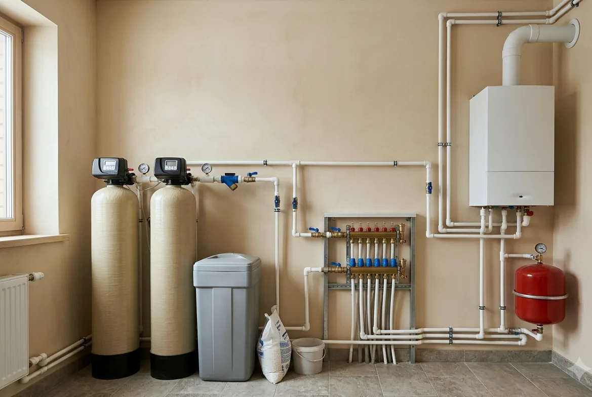

Подбор системы
Анализ, расход, давление, место, септик и сравнение вариантов.
ОткрытьПодбор, монтаж, обслуживание, диагностика и ремонт. Каждая услуга описана отдельно: что входит, что нужно от вас и что остаётся после работы.

Анализ, расход, давление, место, септик и сравнение вариантов.
ОткрытьМагистральные, картриджные и питьевые фильтры без полноценной станции.
ОткрытьДоставка, обвязка, дренаж, настройка, промывка и запуск системы.
ОткрытьПроверка режимов, расходников, автоматики и качества работы по регламенту.
ОткрытьКогда вернулся запах, налёт, упал напор или система ведёт себя необычно.
ОткрытьСогласованные работы после диагностики, без автоматической замены всего узла.
ОткрытьПодбор совместимых элементов, замена и проверка перепада давления.
ОткрытьТолько после подтверждения выработки ресурса и причины ухудшения воды.
ОткрытьЗащита сезонной системы от замерзания и застоя.
ОткрытьПроверка, промывка, настройка и безопасный запуск после зимы.
ОткрытьДобавление или замена ступеней при изменении анализа и расхода.
ОткрытьДиагностика и обслуживание оборудования, которое ставили не мы.
ОткрытьОпишите, как ведёт себя система и что изменилось в воде. Сначала определяем услугу, затем согласуем работы.
Если известно, что именно сломалось, – ремонт. Если система просто ведёт себя не как раньше, начинают с диагностики: она отвечает, что случилось и во что это обойдётся, а работы согласуют уже после. Обслуживание – плановая проверка исправной системы, а не поиск неисправности.
Установка – когда оборудование уже определено и его нужно грамотно врезать: колба, магистральный или питьевой фильтр. Монтаж под ключ – система целиком: обвязка, дренаж, электрика, настройка режимов, промывка и запуск. Разница в объёме обвязки и в том, кто отвечает за работу всей схемы.
Не обязательно, но у связки есть смысл: тот, кто считал схему, отвечает и за то, как она работает после запуска. Когда этапы разнесены между исполнителями, зона ответственности размывается, и при первой же проблеме каждый показывает на соседа. Это стоит обговорить заранее.
Три вещи: что входит в услугу и что в неё не входит, какие данные подготовить заранее и что вы получите на выходе – документ, настройку или выполненную работу. Если хотя бы один пункт остаётся туманным, дальше обычно появляются доплаты.
Доступ к оборудованию и месту ввода воды, документы и паспорта на то, что уже стоит, и воспоминание о том, когда и что меняли в последний раз. Фотографии узла целиком и крупным планом шильдиков часто экономят целый выезд.
Сначала зафиксируем источник и симптомы. Для точного решения понадобятся анализ и параметры дома.